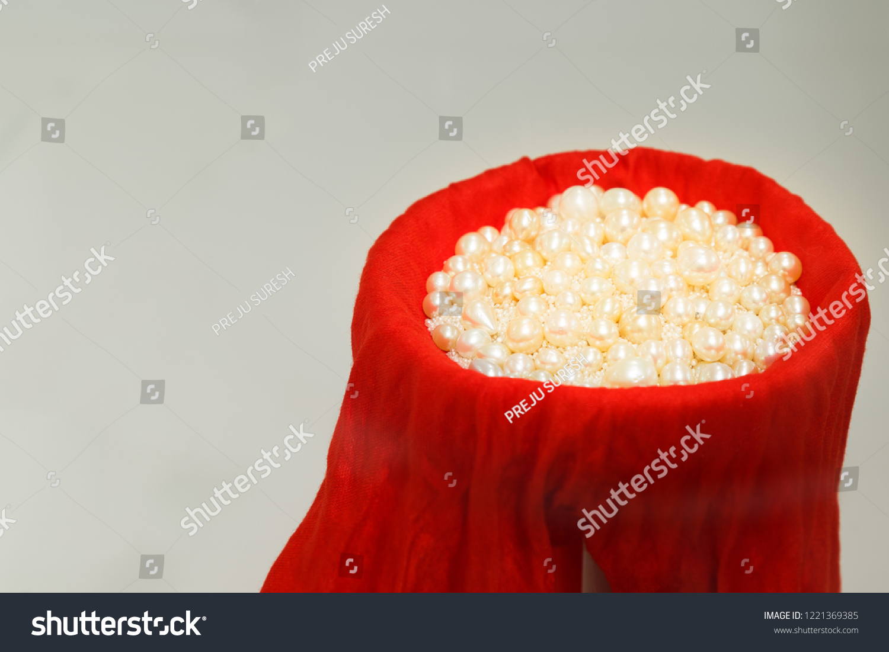
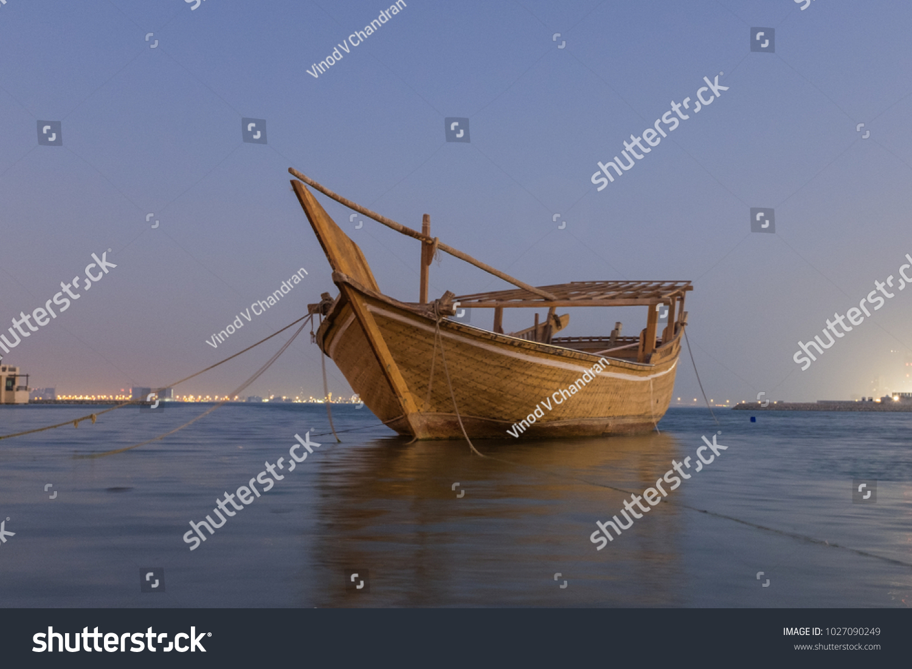

| Home | | | Intro | | | Culture | | | Food | | | Contact me | | |
In Bahrain, households usually consist of parents, their children, and sometimes grandparents.
In some cases,a household includes even more extended family, like uncles and their families living in the same home.
Children do not move out of the home even when they are at college or when they start to work. Typically,
children only move out of the family home when they are married. In many Bahraini families, mothers do not work.
However, if she does, the father is still responsible for supporting his family. Both parents have equal authority,
but in some families most of the authority is with the father. In Bahrain,
family members are expected to have time to pursue to their own interests,
and family members must respect each other’s desires. Meals are usually eaten together as a family.
Pearl Diving forms a key part of the Island Kingdom’s cultural identity, and a means for visitors to delve into Bahrain’s heritage, both off-shore and along the ‘Pearling trail’; the collection of sites, in the former capital ‘Muharraq’, was inscribed on the UNESCO world heritage list in 2012. The narrow alleyways of white-washed facades, and heavy-set carved wooden doors, serve as a portal linking this rich heritage with a new cultural future.
The majestic ‘Dhow’ boats, would have left the coastline to some fanfare, with the crew’s singing Bahraini folkloric songs led by the chants of the ‘Nahkam’, following the regular beat of the drum, an instrument still prevalent in the music of Bahrain to this day.
